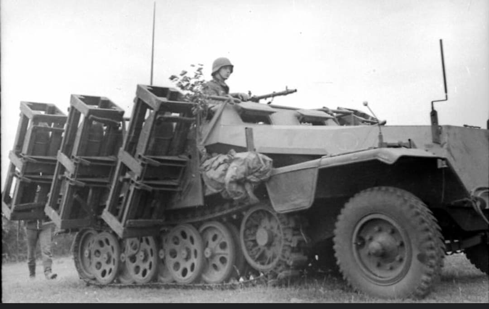
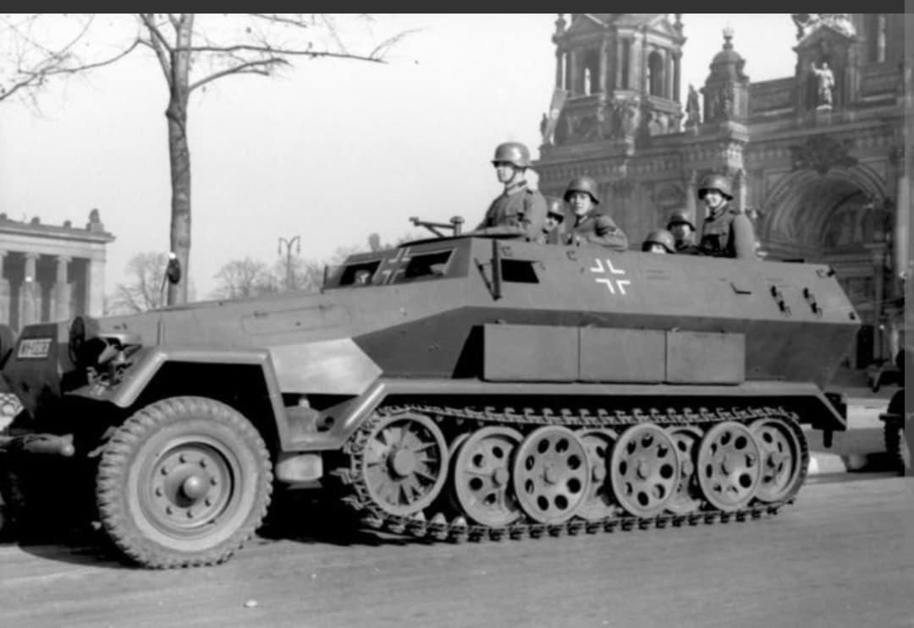
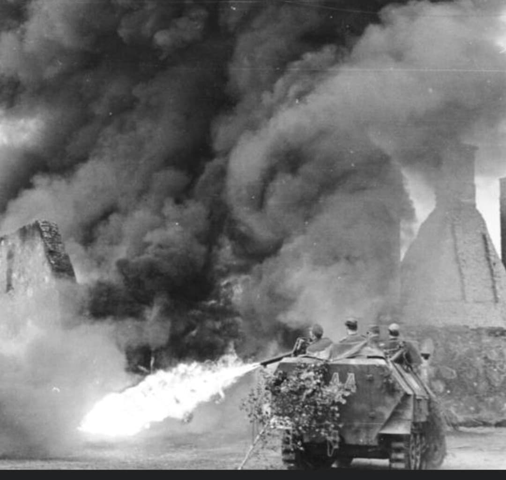

Le transport de troupes semi-chenillé emblématique de la Blitzkrieg et des Panzergrenadiere

Véritable icône tactique de la Wehrmacht, le Sd.Kfz. 251 (Sonderkraftfahrzeug 251), officiellement désigné Mittlerer Schützenpanzerwagen (véhicule blindé moyen de transport d'infanterie), fut le véhicule semi-chenillé blindé le plus produit par l'Allemagne durant la Seconde Guerre mondiale.
Conçu pour transporter les soldats d'infanterie mécanisée (les Panzergrenadiere) au plus près de la ligne de front tout en les protégeant des tirs d'armes légères et des éclats d'obus, il permit aux unités d'infanterie de suivre le rythme effréné des divisions blindées (Panzer-Divisionen).
Développé par la firme Hanomag à partir du châssis du tracteur d'artillerie léger Sd.Kfz. 11, le Sd.Kfz. 251 se caractérise par une superstructure blindée à plaques inclinées et un train de roulement hybride (roues directrices à l'avant, chenilles imbriquées à l'arrière).
Propulsé par un moteur Maybach HL 42 à 6 cylindres de 100 chevaux, ce véhicule de 8,8 tonnes pouvait transporter un équipage de 2 hommes et un groupe de combat de 10 soldats équipés, atteignant une vitesse maximale de 52 km/h sur route.

Construit en quatre modèles principaux (Ausf. A, B, C et la version simplifiée Ausf. D), le Sd.Kfz. 251 a donné naissance à plus de 23 variantes spécialisées : poste de commandement radio (Sd.Kfz. 251/3), ambulance blindée (Sd.Kfz. 251/8), lance-flammes (Sd.Kfz. 251/16) ou encore support antichar équipé d'un canon Pak 40 (Sd.Kfz. 251/22).
Des campagnes de Pologne et de France en 1940 jusqu'à l'enfer du front de l'Est, en Afrique du Nord et durant les batailles de Normandie et des Ardennes, le Sd.Kfz. 251 est resté le fer de lance de la mobilité tactique allemande jusqu'à la fin du conflit.

Produit à plus de **15 000 exemplaires** entre 1939 et 1945, le Sd.Kfz. 251 a marqué une étape fondamentale dans la doctrine du combat mécanisé moderne et le concept du véhicule de combat d'infanterie (VCI).
Bien que l'industrie allemande n'ait jamais réussi à en fabriquer en quantité suffisante pour équiper la totalité de ses unités d'infanterie, son architecture et sa doctrine d'emploi ont profondément inspiré les véhicules de transport blindés d'après-guerre à travers le monde (notamment le M3 Half-track américain et le OT-810 tchécoslovaque).
Page du Musée HOP WW2 – Section Véhicules Terrestres Allemands